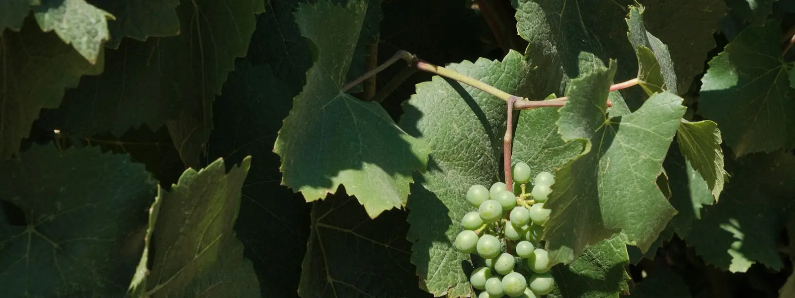
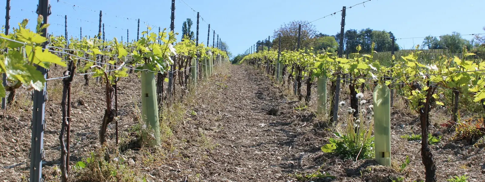
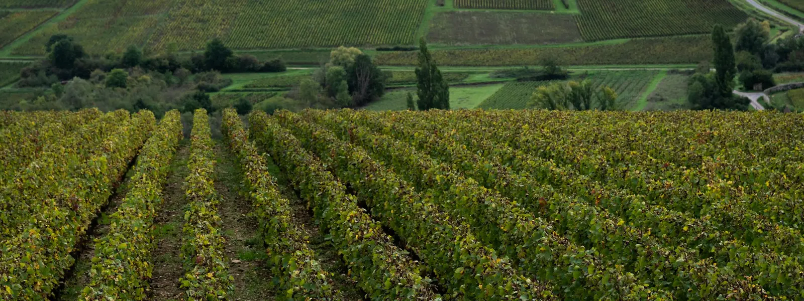
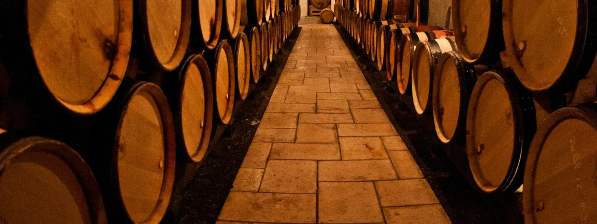
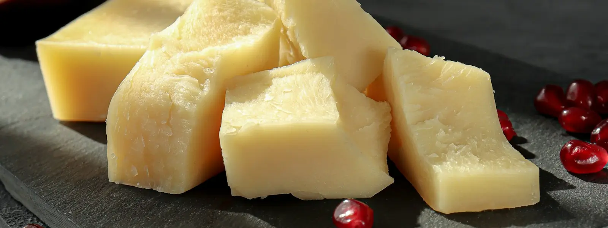
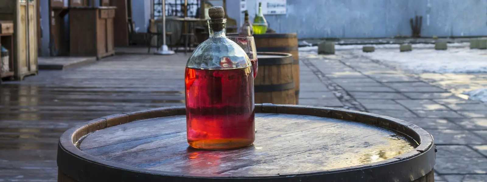
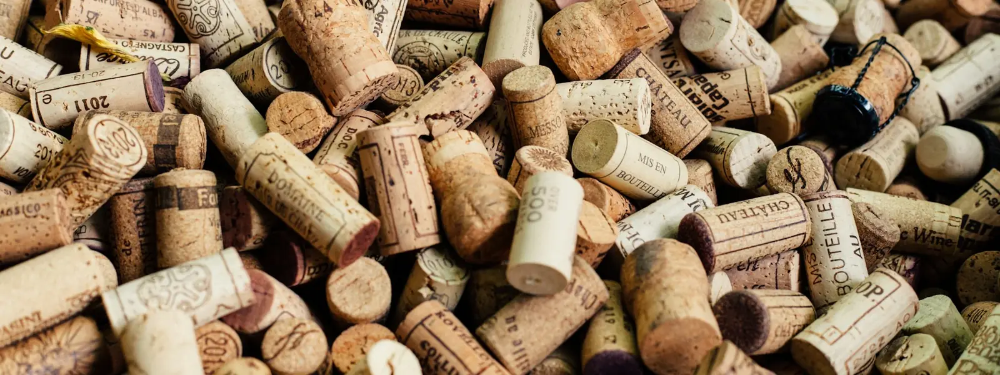
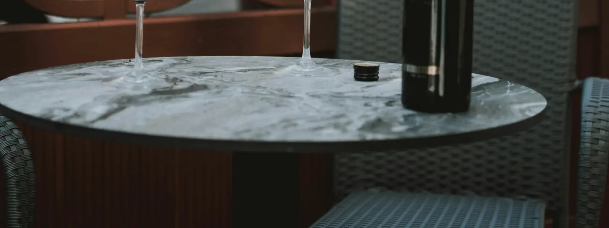
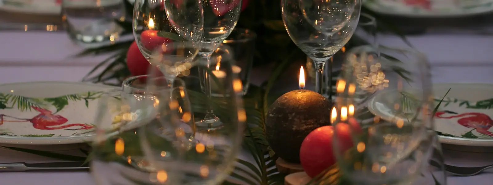
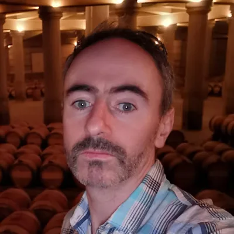

Key moments in the history of wine, from the first known winemakers to today. New milestones are added every day.
Grape Varieties

Wine Regions

Start at the home page, then choose a country, a region and a subregion.
Map view: explore the regions on a map
Pick a continent, then a country, then a region on the map.
Countries
Regions
Tap a region to see its grapes and style.
The Wine Library

Real bottles from real producers, each linked to its region and grapes. New wines are added every day. Wines with the badge are Diego's Selection: bottles I pour as head sommelier.
Spirits

The great spirit regions of the world, from Islay malts to Oaxaca mezcal: what they make, how it's made and the bottles to try. New spirits are added every day.
What's for dinner?

Pick a dish to see the grapes that suit it, real bottles to try and a recipe.
Pick a dish to see wines that suit it.
Serving temperatures
Serve each style at its best: most whites are served too cold and most reds too warm.
Style
Temp
Tip
Sparkling
6–8°C / 43–46°F
Chill about 3 hours
Light white & rosé
7–10°C / 45–50°F
Fridge for 2–3 hours
Full white
10–13°C / 50–55°F
Take out 20 minutes early
Light red
12–14°C / 54–57°F
Brief chill helps
Full red
15–18°C / 59–64°F
Cooler than room temp
Vintage Chart

Weather shapes each harvest. Ratings and drinking windows are broad, simplified summaries of the general view as of today, not verdicts on any single bottle. Producer and wine level matter as much as the year.
Region
2016
2017
2018
2019
2020
2021
2022
2023
Bordeaux
5
3
4
5
5
3
5
4
Burgundy (red)
3
4
4
5
5
3
4
4
Northern Rhône
5
4
4
5
4
4
4
4
Piedmont
5
3
3
5
4
5
4
4
Tuscany
5
3
4
5
4
5
4
4
Napa Valley
4
4
5
4
2
5
4
4
Quality5 Great 4 Good 3 Fair 2 Poor
Bottle Drink now Drink or keep Keep
Examples: 2020 Napa was hit by wildfire smoke, and 2021 Burgundy was cut by spring frost.
A–Z Glossary

No matching terms.
A
Abboccato
Italian for slightly sweet.
Acetaldehyde
A compound formed when wine meets oxygen, smelling of bruised apple or sherry. A fault in table wine, but a hallmark of fino sherry.
Acidity
The freshness that makes your mouth water. High acidity feels crisp.
Aeration
Letting wine meet air so its aromas open up and its flavors soften.
Alcohol by volume (ABV)
The percentage of a wine that is alcohol, shown on the label.
Amabile
Italian for ‘lovable’: a medium-sweet wine, a touch sweeter than abboccato but not fully dolce.
Amarone
A rich Italian red from partly dried grapes in Valpolicella.
Amontillado
Sherry that starts under flor, then ages with air contact. Nutty and amber.
Ampelography
The science of identifying and classifying grapevines, traditionally by leaf and berry shape, now often backed up by DNA analysis.
Amphora
A clay jar used to ferment and age wine since ancient times, now revived by producers seeking texture without oak flavour.
Angel's share
The wine lost to evaporation while it ages in barrel.
AOC
Appellation d'Origine Contrôlée: France's system of protected wine regions and the rules for each.
Aperitif
A drink served before a meal to stimulate the appetite.
Appassimento
Italian method of drying harvested grapes on racks to concentrate sugar and flavor.
Appellation
A legally defined area where grapes are grown, with rules on what can be made there.
Aroma
A smell that comes from the grape itself, such as fruit or flowers.
Assemblage
The blending of different wines or grapes into the final wine.
Astringent
A drying, grippy feeling in the mouth, usually caused by tannin.
Auslese
German Prädikat for very ripe, selected bunches. Riper than Spätlese, often sweet.
Austere
Firm, lean and restrained, with little fruit or softness.
Autolysis
The breakdown of dead yeast cells, which adds bready, biscuit notes to sparkling wine.
AVA
American Viticultural Area: a US wine region defined by geography.
B
Balance
How well acidity, sweetness, tannin, alcohol and fruit sit together without one standing out.
Balthazar
A 12-litre bottle, equal to 16 standard bottles.
Barrel aging
Maturing wine in oak barrels, which adds flavors like vanilla and spice and lets in tiny amounts of air.
Barrique
A 225-litre oak barrel, the classic Bordeaux size.
Bâtonnage
Stirring the lees in a barrel or tank to add richness and texture.
Baumé
A scale for measuring the sugar in grape must; one degree Baumé roughly equals 1% potential alcohol. Common in France and Australia.
Beerenauslese
Sweet German wine from individually selected, very ripe, often botrytized berries.
Bentonite
A fine clay used to fine white and rosé wines, removing unstable proteins that could otherwise cause a haze in bottle.
Biodynamic
A farming approach that treats the vineyard as one living system and follows a set calendar of tasks.
Bitter
A sharp, unpleasant taste, often from tannin or unripe skins.
Blanc de Blancs
A white wine, often sparkling, made only from white grapes. In Champagne this means Chardonnay.
Blanc de Noirs
A white or pale wine made from dark-skinned grapes, with the juice kept away from the skins.
Blend
A wine made from more than one grape variety, vineyard or batch.
Blind tasting
Tasting wine without seeing the label, to judge it on its own merits.
Bodega
A Spanish winery or wine storehouse.
Body
How heavy or light the wine feels, from light as skim milk to rich as cream.
Bordeaux blend
A red blend of grapes such as Cabernet Sauvignon, Merlot and Cabernet Franc.
Botrytis
A mold that shrivels grapes and concentrates their sugar, used for sweet wines like Sauternes. Also called noble rot.
Bottle shock
A temporary dullness after bottling or travel that fades with rest.
Bouquet
The smells that develop as a wine ages in barrel and bottle.
Brettanomyces
A yeast that in small amounts adds savory notes, and in larger amounts barnyard or medicinal smells.
Brix
A scale measuring sugar in grape juice. Higher Brix means more potential alcohol.
Brut
A dry style of sparkling wine with very little sugar.
Bud break
The moment in spring when buds on the vines open and growth begins.
Bush vine
A vine grown without a trellis as a free-standing goblet shape, common in warm, dry regions. Also called gobelet.
Buttery
A creamy, butter-like note, often from malolactic fermentation in Chardonnay.
C
Canopy management
Adjusting a vine's leaves and shoots to control sunlight, airflow and ripening.
Cap
The mass of skins and solids that floats on top of fermenting red wine.
Cap Classique
South African sparkling wine made by the traditional method.
Capsule
The foil or plastic covering over a bottle's cork.
Carbonic maceration
Fermenting whole, uncrushed grapes in a carbon dioxide-rich tank. It gives light, fruity reds, as in Beaujolais.
Cassis
The aroma of blackcurrant, common in Cabernet Sauvignon.
Cava
Spanish sparkling wine made by the traditional method, mainly in Catalonia.
Cellar
A cool, dark place to store wine. Also the winery's area for making and storing it.
Chalky
A dry, powdery texture or a flavor like chalk, often noted in wines from limestone soils.
Chambré
French for 'brought to room temperature'. An old serving term for red wine, from days when rooms were cooler than today.
Chaptalization
Adding sugar to grape juice before fermentation to raise the final alcohol level.
Charmat
The tank method of making sparkling wine, with the second fermentation in a large tank.
Château
A wine estate, especially in Bordeaux.
Clairet
A Bordeaux style between rosé and light red, made with a short maceration; the likely origin of the English word ‘claret’.
Claret
The traditional British word for red Bordeaux.
Classico
Italian for 'classic': the original historic heart of a wine zone, such as Chianti Classico or Soave Classico.
Climat
A named, precisely defined vineyard plot in Burgundy.
Clone
A genetic variant of a grape variety chosen for traits like yield or flavor.
Clos
A vineyard enclosed by a wall, common in Burgundy.
Cloying
Describes a sweet wine without enough acidity to balance it, leaving a heavy, sticky impression on the palate.
Cold soak
Chilling crushed grapes with their skins before fermentation to extract color and fruit.
Colheita
Portuguese for 'harvest'. In Port, a tawny from a single vintage, aged at least seven years in wood before bottling.
Complex
A wine with many layers of aroma and flavor that change as you taste it.
Cooked
A flat, stewed fruit flavor from too much heat in the vineyard or storage.
Cooperage
The craft of making barrels, or the place where they are made.
Cooperative
A winery owned by a group of growers who pool their grapes.
Cordon
A permanent woody arm of the vine trained along a wire, from which short spurs are pruned each winter.
Corkage
A fee a restaurant charges for opening a bottle you bring yourself.
Corked
A wine spoiled by a compound called TCA, giving a smell of wet cardboard or damp cellar.
Cosecha
Spanish for ‘harvest’; on a label it shows the vintage year the grapes were picked.
Coulure
Poor fruit set after flowering, which reduces the size of the crop.
Coupe
A shallow, broad-bowled stemmed glass once fashionable for Champagne; pretty, but it loses bubbles and aroma quickly.
Cover crop
Plants grown between vine rows to protect soil and encourage biodiversity.
Cream sherry
A sweet sherry style, usually Oloroso blended with Pedro Ximénez or other sweetening wine.
Creamy
A smooth, rounded texture, often from lees or malolactic fermentation.
Crémant
A French sparkling wine made by the traditional method outside Champagne.
Crianza
A Spanish aging category with a minimum time in barrel and bottle. Rules vary by region.
Crisp
Fresh and lively, with refreshing acidity.
Cru
French for 'growth'. It marks a vineyard or estate of recognized quality.
Cru Bourgeois
A classification of Médoc châteaux outside the 1855 ranking, with three tiers – Cru Bourgeois, Supérieur and Exceptionnel – reviewed every five years.
Cru Classé
French for ‘classified growth’: a château ranked in an official classification, such as the 1855 Médoc and Sauternes list.
Crust
The thick sediment that forms in unfiltered Vintage Port.
Cuvaison
The time a red wine spends in contact with its skins during fermentation.
Cuvée
A specific blend or batch of wine. In Champagne it can also mean the first pressing of the juice.
D
Decanting
Pouring wine into another vessel to aerate it or separate sediment.
Dégorgement
French for disgorgement.
Délestage
French for 'unloading': rack-and-return, where fermenting juice is drained off and pumped back over the cap to extract colour and soften tannins.
Demi-sec
Medium-sweet. For sparkling wine it is sweeter than dry.
Dense
Packed with concentrated flavor and color.
Dessert wine
A sweet wine served with or in place of dessert.
Destemming
Separating grape berries from their stems before fermentation to avoid green, harsh tannins. Called éraflage or égrappage in French.
Digestif
A drink, often a spirit, served after a meal to aid digestion.
Disgorgement
Removing the yeast sediment from a bottle of sparkling wine after aging.
Diurnal range
The difference between daytime and night-time temperatures. Cool nights help grapes keep fresh acidity and aroma.
DO
Denominación de Origen: Spain's system of protected wine regions.
DOC / DOCG
Italy's quality labels for protected wine areas. DOCG has stricter rules and testing.
DOCa
Denominación de Origen Calificada, Spain's top quality tier, held only by Rioja and Priorat (DOQ in Catalan).
Domaine
A wine estate, especially in Burgundy.
Dosage
The small amount of sugar and wine added to sparkling wine just before final corking.
Double magnum
A 3-litre bottle, equal to four standard bottles; the Bordeaux name for what Champagne calls a Jeroboam.
Doux
French for sweet. The sweetest level of Champagne.
Dry
A wine with little or no sugar left after fermentation.
Dry farming
Growing vines without irrigation, relying on rainfall and deep roots; often linked to lower yields and concentrated fruit.
Dumb
Describes a wine that is temporarily closed, with little aroma or flavor.
E
Earthy
Aromas or flavors of soil, mushrooms or forest floor.
Einzellage
German for 'single site': an individual, registered vineyard named on the label after the village.
Elegant
Refined and balanced, with finesse rather than power.
Élevage
The aging and handling of wine between fermentation and bottling.
En primeur
Buying wine as a future, months or years before it is bottled and released.
Erste Lage
German for 'first site': the VDP's second-highest vineyard tier, just below Grosse Lage, comparable to a Burgundian premier cru.
Erzeugerabfüllung
German for ‘producer bottling’: the wine was bottled by the grower or growers’ cooperative that made it.
Estate bottled
Wine grown, made and bottled by the same producer at one property.
Esters
Aroma compounds formed during fermentation and aging that give fruity and floral notes.
Estufagem
The Portuguese process of gently heating Madeira in tanks for at least three months, giving its cooked, caramel and nutty character.
Extra brut
A very dry style of sparkling wine, drier than brut.
Extra dry
For sparkling wine, a style slightly sweeter than brut.
Extract
The dissolved solids in a wine, such as color, tannin and sugar, that give it depth.
F
Fat
A full, heavy wine with low acidity.
Feinherb
An unofficial German label term for wines that taste off-dry, usually a touch sweeter than halbtrocken.
Fermentation
The process in which yeast turns sugar into alcohol and carbon dioxide.
Fiasco
Italian for ‘flask’: the round-bottomed, straw-wrapped bottle long associated with traditional Chianti.
Field blend
A vineyard planted with several varieties that are harvested and fermented together.
Filtration
Passing wine through a filter to remove particles and microbes before bottling.
Fining
Adding a substance to clear a wine of tiny particles that cause cloudiness or harshness.
Finish
How long the flavors linger after you swallow.
Fino
A dry, pale Sherry aged under a layer of flor.
Firm
A wine with noticeable tannin or acidity that gives it a solid structure.
Flabby
A wine that tastes limp because it lacks acidity.
Flat
Lacking freshness or, in sparkling wine, lacking bubbles.
Fleshy
A soft, plump wine with ripe fruit.
Flight
A group of wines tasted together for comparison.
Flinty
A dry, smoky, struck-stone note often found in Sauvignon Blanc and Chablis.
Flor
A layer of yeast that grows on some Sherries and protects them from air.
Flute
A tall, narrow glass used for sparkling wine.
Fortified wine
Wine with added spirit, such as Port, Sherry or Madeira.
Foudre
French for a very large wooden vat, often holding several thousand litres, used for gentle ageing with little oak flavour.
Foxy
The grapey, musky aroma typical of some American grapes such as Concord.
Free-run juice
The juice that flows from crushed grapes without pressing.
Frizzante
Italian for lightly sparkling.
Fruit set
The stage after flowering when tiny berries begin to form.
Fruit-forward
A style where ripe fruit flavors lead over earthy or oaky notes.
Full-bodied
A wine that feels rich and heavy in the mouth.
G
Garrafeira
A Portuguese term for a top wine given extended ageing in cask and bottle before release, often from a single vintage.
Geranium taint
A fault smelling of crushed geranium leaves, caused when lactic bacteria break down sorbic acid added as a preservative.
GI (Geographical Indication)
A legally protected place name for wine, used notably in Australia and in EU and international law.
Glycerol
A natural compound in wine that adds smoothness and body.
Grafting
Joining a vine variety onto a separate rootstock.
Gran Reserva
Spain's top aging category, with long aging in barrel and bottle.
Grand Cru
The top tier of vineyards in Burgundy and Alsace. In Bordeaux the term is used differently by each area.
Grand vin
The main, top-tier wine of an estate.
Green
Flavors of unripe fruit, leaves or stems.
Green harvest
Cutting off some unripe bunches to reduce yield and concentrate flavor.
Grippy
A wine whose tannins grab the mouth.
Grosses Gewächs
German for 'great growth'. The VDP's term for a dry wine from a top-rated Grosse Lage vineyard, shown as GG.
Grower Champagne
Champagne made by the same estate that grows the grapes.
Gutswein
The entry level of the German VDP classification: an estate wine from the producer’s own vineyards, named by grape or brand.
Gyropalette
A machine that riddles large crates of sparkling-wine bottles automatically, doing in days what hand riddling takes weeks to achieve.
H
Halbtrocken
German for 'half-dry'. An off-dry wine with a little noticeable sweetness, legally up to 18 g/L of residual sugar.
Hang time
How long grapes stay on the vine before picking.
Hard
A wine with harsh tannin or acidity.
Harvest
Picking the grapes, usually late summer to autumn. Also called vendange.
Heady
A wine with noticeably high alcohol.
Herbaceous
Aromas of fresh herbs, grass or green pepper.
Hock
A traditional British word for German white wine.
Hollow
A wine with a start and finish but little in the middle.
Horizontal tasting
Comparing wines from the same vintage but different producers.
Hot
A wine whose alcohol gives a burning feel.
Hybrid grape
A grape produced by crossing different species.
Hydrometer
A tool for measuring the sugar in juice to track ripeness and fermentation.
I
Ice wine
Sweet wine from grapes frozen on the vine and pressed while still frozen. Eiswein in German.
IGT / IGP
Wine labels for a wider regional area, often allowing more freedom than DOC or AOC.
Imperial
A 6-litre bottle, equal to eight standard bottles, used mainly for Bordeaux reds.
Inky
A very dark, deeply colored wine.
Integrated
A wine where oak, tannin and acidity blend smoothly with the fruit.
Isinglass
A fining agent made from fish bladders.
J
Jammy
A red wine with very ripe, concentrated, cooked-fruit flavors.
Jeroboam
A large bottle holding 3 litres. For Bordeaux it can be 4.5 litres.
Jug wine
Inexpensive wine sold in large bottles.
K
Kabinett
The lightest German Prädikat level, from fully ripe grapes.
Kosher wine
Wine made under Jewish dietary law.
Kvevri
A large buried clay vessel used for making wine in Georgia. Also spelled qvevri.
L
Lactic
Related to lactic acid, which gives a soft, creamy impression.
Lagar
A shallow stone trough in which grapes are foot-trodden, still used in the Douro for some of the finest Port.
Late Bottled Vintage (LBV)
A Port from a single year, aged four to six years in wood before bottling, so it is ready to drink sooner.
Late harvest
Grapes picked later than usual for extra sugar, often used for sweet wines.
Lean
A wine with high acidity and little fruit or body.
Lees
The dead yeast and grape particles that settle after fermentation. Resting on them adds body and a bready note.
Legs
The streaks that run down the glass after swirling. They reflect alcohol and sugar, not quality.
Length
Another way to describe the finish. A long wine keeps its flavor well after you swallow.
Lieu-dit
A named place or parcel within a vineyard area, especially in France.
Lifted
A wine whose aromas feel bright and fragrant.
Light strike
A fault caused by UV light reacting with the wine, giving smells of cabbage or wet cardboard; a risk in clear glass bottles.
Light-bodied
A wine that feels light and delicate in the mouth.
Liqueur de tirage
The mix of yeast and sugar added to still wine to start the second fermentation in the bottle.
Lively
Fresh and energetic, with bright acidity.
Lush
A rich, soft wine with plenty of ripe fruit.
M
Maceration
Soaking grape skins in juice or wine to draw out color, flavor and tannin.
Madeirized
A wine cooked or oxidized so that it tastes like Madeira, nutty and caramelized.
Magnum
A bottle holding 1.5 litres, equal to two standard bottles.
Malolactic fermentation
A step that turns sharp malic acid into softer lactic acid. It gives a creamy feel.
Manzanilla
A pale, very dry Fino-style sherry aged under flor in Sanlúcar de Barrameda, known for its salty, tangy freshness.
Master of Wine (MW)
A title awarded by the Institute of Masters of Wine in London after a famously demanding exam; only a few hundred people hold it.
Master Sommelier (MS)
The top title awarded by the Court of Master Sommeliers, earned by passing demanding theory, blind tasting and service exams.
Medium-bodied
A wine between light and full in weight.
Mercaptans
Sulfur compounds that give smells of rotten onion, garlic or rubber.
Méthode traditionnelle
The method of making sparkling wine by a second fermentation in the bottle, as in Champagne.
Methuselah
A 6-litre bottle, equal to 8 standard bottles.
Micro-oxygenation
Adding tiny controlled amounts of oxygen to soften tannin and stabilize color.
Mid-palate
The middle part of the tasting experience, between the first taste and the finish.
Mildew
A fungal vine disease. Powdery and downy mildew are the main types.
Millerandage
Uneven fruit set, leaving bunches with a mix of normal and tiny seedless berries. Often called 'hens and chicks'.
Mineral
A word for flavors like wet stone, chalk or salt. Its exact meaning is debated.
Mis en bouteille au château
Bottled at the estate where the grapes were grown.
Monopole
A vineyard owned entirely by one producer, mainly in Burgundy.
Mousiness
A fault from certain bacteria or yeasts, giving an unpleasant aftertaste like a mouse cage on the finish; more common in low-sulphite wines.
Mousse
The foam and texture of the bubbles in sparkling wine.
Mouthfeel
The texture of a wine: its weight, smoothness, grip and warmth.
Mouthwatering
Describes wine with acidity that makes you salivate.
Muselet
The wire cage that holds a sparkling wine's cork in place.
Must
Freshly crushed grape juice, including skins, seeds and pulp, before it becomes wine.
Mutage
Adding spirit to stop fermentation, used to make fortified wines.
N
Natural wine
Wine made with minimal intervention. There is no single legal definition.
Nebuchadnezzar
A 15-litre bottle, equal to 20 standard bottles.
Négociant
A merchant who buys grapes or wine and sells under their own label.
New World
Wine regions outside Europe's traditional areas, such as the US, Australia and Chile.
Noble grape
A name for classic grapes like Cabernet Sauvignon, Pinot Noir and Chardonnay.
Noble rot
See Botrytis.
Non-vintage (NV)
A wine blended from several years rather than one, common in Champagne.
Nose
The overall smell of a wine.
Nouveau
A very young wine released soon after harvest, such as Beaujolais Nouveau.
Nutty
Aromas of almonds, hazelnuts or walnuts, often from aging or oxidation.
O
Oak
The wood used for barrels. It adds flavors such as vanilla, toast and spice.
Oaky
A wine with strong flavors from oak, such as vanilla, toast or smoke.
Oechsle
A German scale measuring the sugar in grape must by its density; Prädikat levels such as Spätlese have Oechsle minimums.
Oeil de perdrix
French for 'partridge eye': a pale, coppery-pink colour, and a name for rosé or blanc de noirs wines with that tint.
Oenology
The science of wine and winemaking.
Off-dry
Slightly sweet, just past dry.
Old vines
Vines that give smaller crops of more concentrated fruit. There is no legal age, though some regions define it.
Old World
Europe's traditional wine regions, such as France, Italy and Spain.
Oloroso
A dark, rich Sherry aged with air contact and no flor.
Opulent
Rich, ripe and luxurious.
Orange wine
White grapes fermented with their skins, which gives an amber color and some tannin.
Organic wine
Wine from grapes grown without synthetic pesticides or fertilizers. Rules vary by country.
Ortswein
The village level of the German VDP classification, from respected sites within a single village; one step above Gutswein.
Oxidation
Exposure to too much air, which dulls fruit and can give flavors of bruised apple or nuts.
P
Palate
Your sense of taste, or the flavors of a wine in the mouth.
Palo Cortado
A rare sherry that begins under flor then ages oxidatively, combining Amontillado's finesse with Oloroso's richness.
Passerillage
Drying grapes on the vine to concentrate their sugars.
Passito
Italian wine made from dried grapes, often sweet.
Peppery
A spicy note of black or white pepper, common in Syrah.
Pét-Nat
Short for pétillant naturel. A sparkling wine bottled before the first fermentation finishes.
Pétillant
Lightly sparkling, with fewer bubbles than a fully sparkling wine.
Petrol
A kerosene-like aroma typical of mature Riesling, caused by the compound TDN. Prized by many, disliked by some.
pH
A measure of acidity. Lower pH means a more acidic wine.
Phylloxera
A tiny insect that destroyed most European vineyards in the 1800s. Grafting onto resistant roots solved it.
Piccolo
A small 187.5 ml bottle, a quarter of a standard bottle, often used for single servings of sparkling wine. Also called a split.
Pigeage
Punching down the cap of skins into the fermenting wine.
Plush
A soft, velvety and generous wine.
Polished
Smooth, refined and without rough edges.
Pomace
The skins, seeds and stems left over after pressing.
Prädikat
Germany's quality system based on grape ripeness at harvest.
Premier Cru
French for 'first growth'. In Burgundy it ranks just below Grand Cru.
Pressing
Squeezing grapes to separate juice from skins.
Primary aromas
Aromas from the grape itself, such as fruit and flowers.
Pruning
Cutting back vines to control growth and crop size.
Pumping over
Pumping fermenting juice from the bottom of the tank over the cap. Also called remontage.
Punt
The dimple in the bottom of a wine bottle.
Puttonyos
The sweetness scale for Tokaji Aszú, named after the hods once used to add botrytised berries; today usually 5 or 6 puttonyos.
Q
Quaffable
Easy and enjoyable to drink.
Qualitätswein
German for 'quality wine': wine from one of Germany's 13 wine regions meeting basic quality rules, below the Prädikat levels.
Quinta
A Portuguese wine estate or farm, especially in the Douro.
R
Racking
Moving wine off its sediment into a clean container.
Rancio
A nutty, savory aroma in aged, oxidized wines.
Recioto
A sweet Italian wine from the Veneto made from dried grapes, such as Recioto della Valpolicella or Recioto di Soave.
Reductive
Winemaking with little air contact, or a wine with a struck-match or rubbery smell from lack of oxygen.
Rehoboam
A 4.5-litre bottle, equal to six standard bottles, mainly used for Champagne.
Reserva / Riserva
A Spanish or Italian label for wine aged longer before release. Exact rules vary by country and region.
Residual sugar
The sugar left in a wine after fermentation stops.
Rich
A wine with depth, weight and concentrated flavor.
Riddling
Turning bottles of sparkling wine gradually so sediment collects in the neck.
Rim variation
The color difference between the center and the edge of the wine in the glass, which can show age.
Ripasso
A Valpolicella refermented on the dried-grape skins left over from Amarone, giving extra body, depth and alcohol.
Robust
Strong, full and powerful.
Rootstock
The root system a vine is grafted onto, often chosen for pest resistance.
Rosé
A pink wine made by leaving red grape skins in the juice for only a short time.
Round
Smooth and soft, without sharp tannin or acidity.
Ruby
A young, fruity style of Port aged briefly.
Rustic
A wine that is earthy and rough, with less polish.
S
Sabrage
Opening a bottle of Champagne by sliding a sabre along the neck so the collar and cork break cleanly away.
Saccharomyces
The yeast genus most used to ferment wine.
Saignée
Bleeding off some juice early from red grapes to concentrate the red or make rosé.
Salmanazar
A large 9-litre bottle, equal to 12 standard bottles – a full case in one.
Screwcap
A metal closure that seals wine without a cork.
Sec
French for dry. For Champagne it actually means slightly sweet.
Second fermentation
A fermentation of a finished wine to create bubbles, as in Champagne.
Second wine
A wine from a top estate made from younger vines or lesser batches.
Secondary aromas
Aromas from fermentation, such as yeast, butter or bread.
Sediment
Solid particles that settle in older bottles. Harmless but unpleasant to drink.
Sekt
German or Austrian sparkling wine.
Sélection de Grains Nobles
A very sweet Alsace wine from botrytized grapes.
Silky
A smooth, fine texture.
Skin contact
Leaving juice in contact with grape skins to extract color, flavor and tannin.
Smoke taint
Ashy, smoky, medicinal flavours in wine made from grapes exposed to wildfire smoke during the growing season.
Smoky
Aromas of smoke or toast, from oak, soil or smoke-affected grapes.
Soft
Low in tannin or acidity, easy and gentle.
Solera
A system of fractional blending that mixes younger and older wines, used for Sherry.
Sommelier
A trained wine professional, often working in restaurants, who manages the wine list and advises guests.
Sparkling wine
Wine with bubbles from carbon dioxide, made by various methods.
Spätlese
German for 'late harvest'. Riper than Kabinett.
Spicy
Notes of spices such as pepper, clove or cinnamon.
Spumante
Italian for 'sparkling'. A fully sparkling wine, such as Asti or many Prosecco and Franciacorta wines.
Stabilization
Treatments that prevent haze or crystals forming in the bottle.
Stainless steel
Tanks used for clean, fresh wines with no oak influence.
Steely
Tight, mineral and high in acidity, with little oak.
Stemmy
A green, bitter note from stems.
Stems
The woody parts of a grape bunch. Using them in fermentation adds tannin and spice.
Structure
The framework of acidity, tannin, alcohol and body that holds a wine together.
Sulfites
Compounds that occur naturally and are often added to protect wine from spoiling and oxidation.
Super Tuscan
A high-quality Tuscan red made outside the traditional rules, often with international grapes.
Superiore
Italian label term for a wine meeting stricter rules than its basic DOC, typically higher minimum alcohol and sometimes longer ageing.
Supple
Smooth and flexible in the mouth, with soft tannin.
Sur lie
Aging a wine on its lees, for added richness and texture.
Sustainable winemaking
Methods that aim to protect the environment and the long-term health of the vineyard.
Swirling
Gently moving wine in the glass to release its aromas.
T
Table wine
An everyday wine, or in Europe the lowest legal category.
Tannic
A wine with lots of tannin.
Tannin
Compounds from skins and seeds that give red wine its grip and dryness.
Tart
Sharply acidic.
Tartrate crystals
Harmless, glass-like crystals that sometimes form in bottles of wine, especially when chilled.
Tastevin
A shallow silver tasting cup, traditionally worn on a chain by sommeliers and associated with Burgundy.
Tasting notes
Written observations of a wine's look, smell, taste and finish.
Tawny
Port aged for years in barrel, becoming amber and nutty.
TCA
The compound that causes cork taint.
Terroir
The mix of soil, climate and landscape that shapes a wine's character.
Tertiary aromas
Aromas from aging, such as leather, mushroom or dried fruit.
Tête de cuvée
French for a producer’s top or prestige wine, especially in Champagne, made from the best grapes and juice.
Texture
How a wine feels in the mouth, such as creamy, silky or grippy.
Thin
A wine lacking body and flavor.
Tight
Closed and firm, not yet showing its full character.
Tinto
Spanish and Portuguese for 'red', as in vino tinto or vinho tinto.
Tirage
Bottling still wine with yeast and sugar for the second fermentation.
Toast
The level to which the inside of a barrel is charred, affecting flavors like vanilla and smoke.
Trellis
A framework of posts and wires that supports vines.
Trocken
German for 'dry'. On labels it means little or no sweetness, legally up to 9 g/L of residual sugar depending on acidity.
Trockenbeerenauslese
The sweetest German Prädikat, from shriveled botrytized berries.
Typicity
How well a wine shows the traits expected of its grape or region.
U
Ullage
The empty space between the wine and the cork. A larger gap can suggest an older or leaky bottle.
Unctuous
Rich, thick and oily in texture, often for sweet wines.
Unfiltered
Wine bottled without filtration, which can look slightly cloudy.
Unoaked
Wine made and aged without oak, such as in steel tanks, for a fresher, fruitier style.
V
Varietal
A wine made mainly from one named grape, or the grape variety itself.
Vat
A large container for fermenting or storing wine.
VDP
Verband Deutscher Prädikatsweingüter, an association of top German estates marked by an eagle logo, with its own vineyard classification.
Vegan wine
Wine made without animal-derived fining agents like egg, milk or isinglass.
Vegetal
Aromas of vegetables or green plants, such as bell pepper or asparagus.
Velvety
A soft, smooth texture.
Vendange tardive
French for late harvest, used for sweet Alsace wines.
Veraison
The point when grapes change color and begin to ripen.
Vertical tasting
Comparing the same wine from different vintages.
Vigneron
A French word for someone who grows grapes and makes wine.
Vin de pays
A former French category for regional wines, now called IGP.
Vin de table
The French term for basic table wine.
Vin doux naturel
A French sweet wine fortified before fermentation finishes.
Vin gris
French for 'grey wine': a very pale rosé made by pressing red grapes straight away, with almost no skin contact.
Vin jaune
A Jura wine aged under a yeast film for at least six years.
Vineyard
A planted area of grapevines.
Vinification
The process of turning grapes into wine.
Vino de Pago
Spain's top tier for single estates with a distinctive terroir, each with its own appellation.
Vinous
Describes the general character of wine, such as fruit and fermentation notes.
Vintage
The year the grapes were harvested.
Vintage Port
Port from a single exceptional declared year, bottled young after about two years in wood and built to age for decades.
Viscosity
The thickness of a wine, which affects how it moves in the glass.
Viticulture
The growing of grapevines.
Vitis vinifera
The European grape species behind nearly all the world's quality wine.
Volatile acidity
Acetic acid in wine. A little adds complexity, too much smells of vinegar or nail polish.
W
Waiter's friend
The folding lever corkscrew carried by most sommeliers, with a small blade for cutting the foil.
Weight
The impression of fullness in the mouth. Another word for body.
Weingut
The German word for a wine estate.
Weissherbst
A German rosé made from a single red grape variety, such as Spätburgunder, found mostly in Baden and Württemberg.
Whole-cluster
Fermenting grapes with their stems, which adds structure and spice.
Wild yeast
Yeasts naturally present on the grapes and in the cellar that start fermentation without added cultured yeast; also called native or ambient yeast.
Wine thief
A long glass or metal pipette used to draw samples of wine from a barrel for tasting.
Winemaker
The person who decides how grapes are turned into wine.
Winery
The place where wine is made.
Woody
An unpleasant flavor of raw oak or wet wood.
X
Xarel·lo
A white grape grown mainly in Catalonia, Spain, and one of the three classic Cava grapes.
Y
Yeast
The microorganism that converts sugar to alcohol during fermentation.
Yeasty
A bready, doughy note from yeast.
Yield
The amount of grapes or wine produced from a vineyard area. Lower yields often mean more concentrated flavor.
Young wine
A wine early in its life, usually fruity and fresh.
Z
Zero dosage
Sparkling wine with no added sugar at disgorgement.
Zesty
A tasting word for lively, citrusy freshness.
Zymology
The study of fermentation.
Sommelier Study

Quiz yourself on the regions, grapes and producers in this guide, then review a tasting framework.
Score 0/0 · Streak 0
Tasting grid
A systematic, exam-style approach: describe the wine, assess its quality, then draw your conclusions. The analysis below checks your reasoning against this guide.
Wine details
Picture
Add a photo of the bottle or label. It prints on the tasting sheet.
Notes
Deduction clues
High acidity, lower alcohol: often a cooler climate.
Low acidity, high alcohol, ripe fruit: often a warmer climate.
Pale colour, high acidity, low tannin in a red: think Pinot Noir or Nebbiolo-like styles.
Deep colour, high tannin, full body: think Cabernet Sauvignon, Syrah or Tempranillo.
Use clues as a starting point and weigh them together. No single clue decides the answer.
Saved tasting sheets
Certification paths
Court of Master Sommeliers
Four levels
Introductory, Certified, Advanced and Master. Combines theory, blind tasting and service.
WSET
Levels 1 to 4
Wine & Spirit Education Trust courses. Levels 1 to 3 build knowledge and tasting skills; Level 4 is the Diploma.
Study tips
Learn regions with a map, then link each to grapes and styles. Taste with the same grid every time. Quiz in short, frequent sessions. Requirements and exam formats change, so confirm details with the provider.
Sommelier Careers
This guide doesn't host job postings. Use the search buttons to find openings, then save the roles you like in your tracker. The tracker stays on this device.
Major trade fairs and UK trade tastings for sommeliers and buyers. Most are trade-only, so register with your work details. Dates come from the organisers; "TBC" means the date isn't announced yet. Always check the official site before you travel. New events are added every week.
Who imports what: the UK's wine importers and agents, and the producers they represent. Producer lists are checked against each importer's own website; portfolios change, so always confirm with the importer.
Your account
Membership levels
About me


Diego Muntoni
Head Sommelier
This guide brings together wine grapes, regions, tasting tools and study material for wine lovers and aspiring sommeliers.
When I can, I go to the vineyards to see where the wines come from. Photos and notes from those visits are in Wine trips below, starting with Bordeaux in 2022.
What you'll find here
Grapes and regions
Grape profiles, wine regions by country, subregions, producers and maps.
Tasting tools
A step-by-step tasting grid with printable and shareable sheets.
Study and careers
Quizzes, a glossary, a vintage chart and career resources for sommeliers.
Wine trips
Visits to vineyards, cellars and tasting rooms, with photos from each trip.
Bordeaux, 2022
Pauillac · Margaux · Saint-Émilion
A trip to the Left Bank of Bordeaux to visit two of Pauillac's First Growths from the 1855 classification, Château Mouton Rothschild and Château Lafite Rothschild, along with a tasting from Edmond de Rothschild Heritage and a drive through Margaux.
At Mouton I walked the vineyards. At Lafite the highlight was the circular barrel cellar, where the barrels sit in rings around a forest of columns, and a soil map that shows why this gravel is so good for Cabernet Sauvignon. The Edmond de Rothschild Heritage tasting, in a room lined with back-lit bottles, crossed to the Right Bank, with wines from the Saint-Émilion satellites Montagne and Puisseguin. If you want to read more, see Bordeaux and Cabernet Sauvignon.
Tasting with Edmond de Rothschild Heritage: Château de Malengin 'Eve' Montagne Saint-Émilion 2019 (aged in amphorae), Château des Laurets Puisseguin Saint-Émilion 2016 and Château des Laurets Baron 2016